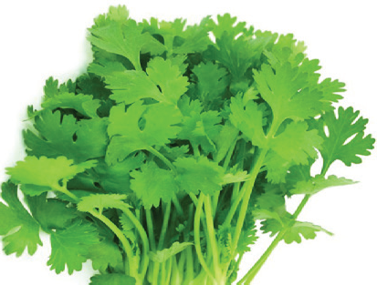
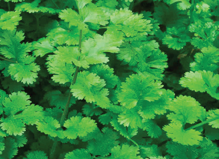
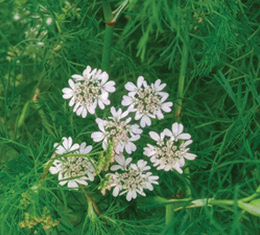
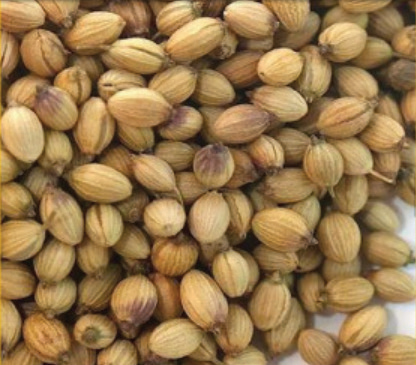
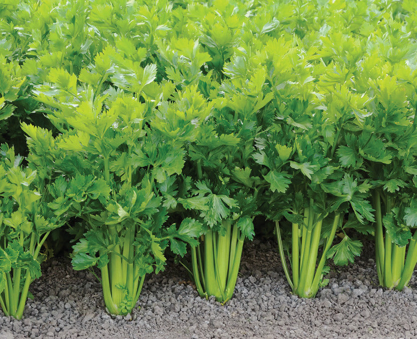
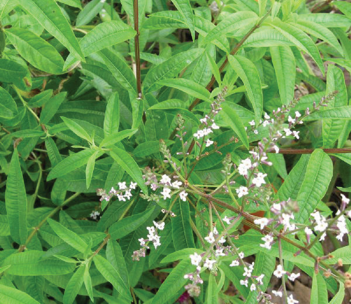
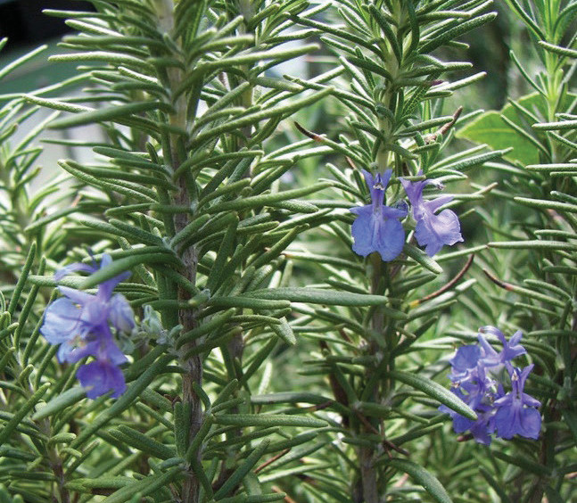
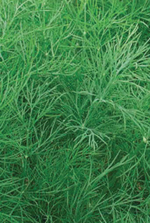
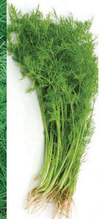
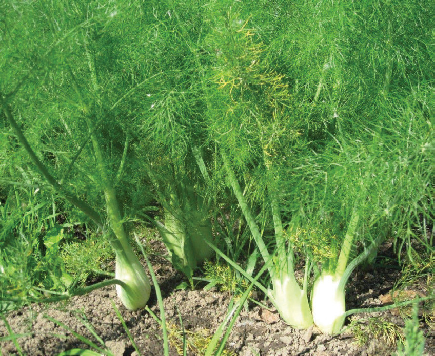

Activity 3.3
1. Use your experience from the environment, a library, and ICT facilities to find out how the spice crops in Figures 3.48 to 3.65 are used and what business can be done with them.
Also, look for information about other common vegetables in your area.
2. Write a summary of what you have learnt from this activity in your portfolio.
AGRICULTURE FORM ONE.indd 409/17/25 12:09 PM